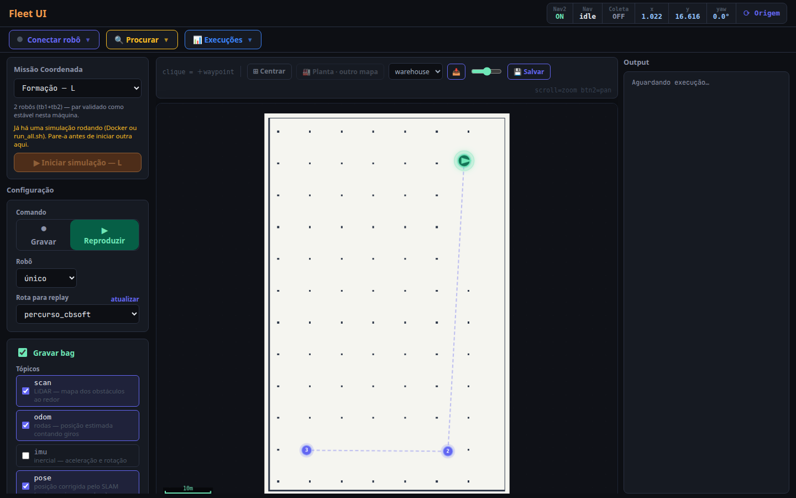
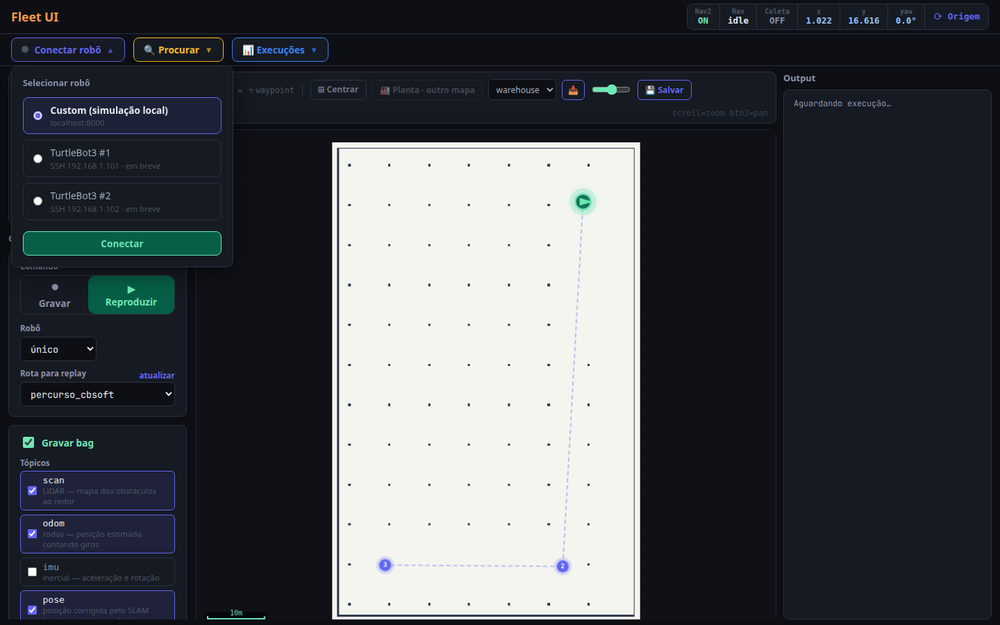
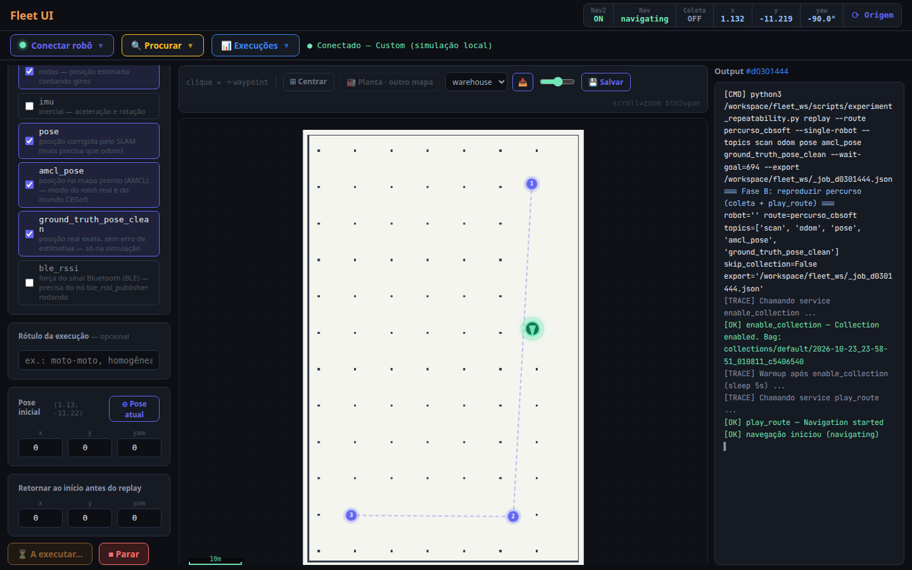
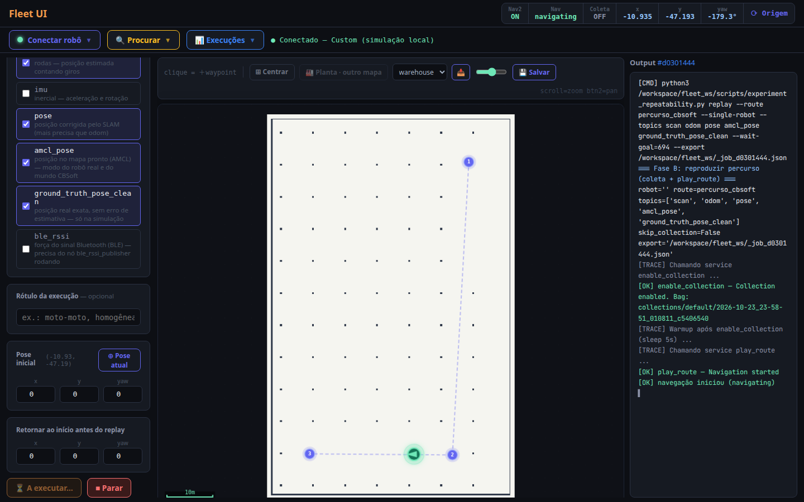
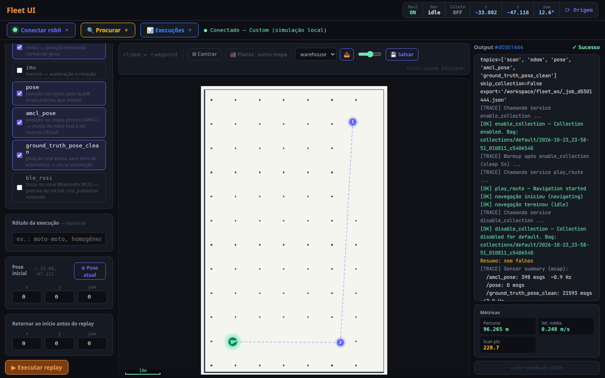

Simulação aberta do percurso, com um botão para executar e os scripts de análise já integrados. Este guia leva do computador vazio até o gráfico de RSSI.
Use o Docker oficial. Os pacotes antigos docker.io e docker-compose do Ubuntu não servem.
sudo apt-get update sudo apt-get install -y ca-certificates curl sudo install -m 0755 -d /etc/apt/keyrings sudo curl -fsSL https://download.docker.com/linux/ubuntu/gpg -o /etc/apt/keyrings/docker.asc sudo chmod a+r /etc/apt/keyrings/docker.asc echo "deb [arch=$(dpkg --print-architecture) signed-by=/etc/apt/keyrings/docker.asc] https://download.docker.com/linux/ubuntu $(. /etc/os-release && echo "$VERSION_CODENAME") stable" | sudo tee /etc/apt/sources.list.d/docker.list > /dev/null sudo apt-get update sudo apt-get install -y docker-ce docker-ce-cli containerd.io docker-buildx-plugin docker-compose-plugin sudo usermod -aG docker $USER
docker run hello-world deve funcionar sem sudo.git clone -b new-way-samsung https://github.com/eduardowanderleyde/fleet-ui.git ~/fleet-ui
cd ~/fleet-ui
make docker-build # só na primeira vez: 15 a 30 minO -b new-way-samsung é importante: é o ramo com o percurso de vocês. Sem ele, vem uma versão antiga. Como o repositório é privado, o GitHub pede login: usem gh auth login ou um token de acesso, porque a senha da conta não funciona no git clone.
fleet-ui-ufpe-….zip, descompactem e entrem na pasta. O resto é igual:unzip fleet-ui-ufpe-*.zip -d ~ cd ~/fleet-ui make docker-build
cd ~/fleet-ui make cbsoft-up
Esse terminal fica ocupado mostrando o que está acontecendo; deixem aberto. Em cerca de 1 minuto, abram http://localhost:5173 no navegador.
O robô aparece no START de vocês, num salão aberto com coordenadas iguais às do mapa hall_cin_v4. A simulação usa o domínio ROS 42, para nunca conversar com um TurtleBot4 de verdade que esteja na mesma rede (eles usam o domínio 0).

percurso_cbsoft desenhado.



make cbsoft-up de novo (cerca de 1 min). O robô volta ao START. A volta automática pela tela existe, mas ainda não foi validada numa rota deste tamanho.Com a simulação ligada, num segundo terminal:
cd ~/fleet-ui make cbsoft-run
Roda o nav_3points.py sem nenhuma alteração de coordenadas e grava o CSV de sempre em fleet_ws/collections/cbsoft/. Em duas corridas assim, o robô andou 96,3 e 96,5 m a 0,254 e 0,253 m/s, em 382 e 383 s.
Os scripts de vocês (sync_rssi_nav.py e analise_agregados.py) estão em fleet_ws/scripts/cbsoft/analise/. O replay pela tela grava em MCAP; primeiro, convertam para o mesmo CSV do nav_3points.py:
make cbsoft-csv # pega a gravação mais recenteDepois, coloquem o log do nRF Connect dentro de fleet_ws/collections/ e rodem:
make cbsoft-analise NAV=collections/cbsoft/<navegacao>.csv NRF="collections/cbsoft/nrf/<log>.txt"
O PNG sai ao lado do CSV. Os horários do CSV usam o fuso do computador, para casar com o log do celular.
Recalculando a Tabela 3 do artigo a partir dos arquivos brutos das seis corridas, com a sincronização de vocês:
| Config. | Corrida | RSSI artigo | RSSI refeito | Dist. artigo | Dist. refeita |
|---|---|---|---|---|---|
| Homogênea | 1 | −89,83 | −89,72 | 68,4 m | 68,6 m |
| Homogênea | 2 | −90,51 | −90,35 | 67,3 m | 67,6 m |
| Homogênea | 3 | −91,97 | −91,70 | 66,9 m | 67,2 m |
| Heterogênea | 1 | −95,72 | −95,36 | 39,4 m | 39,2 m |
| Heterogênea | 2 | −97,30 | −97,16 | 47,3 m | 47,3 m |
| Heterogênea | 3 | −97,11 | −96,74 | 41,6 m | 41,7 m |
As diferenças ficam abaixo de 0,4 dBm e 0,3 m.
O nav_3points.py assina /amcl_pose com o QoS padrão (VOLATILE). O AMCL publica essa pose como TRANSIENT_LOCAL e só republica quando o robô se move. Por isso, as primeiras linhas do CSV podem sair com pose (0, 0).
Aconteceu numa das seis corridas: a homogênea 1, de 19/05 às 15:57, com 3 linhas em (0, 0). Descartando essas linhas, a distância até desconectar dá 68,6 m, contra 68,4 m no artigo. O resultado publicado não foi afetado.
Para as próximas corridas, assinar com a mesma durabilidade do AMCL resolve:
from rclpy.qos import QoSProfile, DurabilityPolicy, ReliabilityPolicy
amcl_qos = QoSProfile(depth=1,
durability=DurabilityPolicy.TRANSIENT_LOCAL,
reliability=ReliabilityPolicy.RELIABLE)
self.create_subscription(PoseWithCovarianceStamped, "/amcl_pose",
self.pose_callback, amcl_qos)A simulação está pronta. O que falta só dá para resolver no laboratório, com o robô de verdade:
Percurso reproduzido, botão de execução, conversão para CSV e scripts de análise de vocês funcionando.
Docker no Ubuntu 22.04 e o primeiro make docker-build.
As actions do Nav2 mudaram entre as versões, então o Nav2 roda no PC, do lado do Fleet UI, como no setup de vocês. O robô só manda laser, odometria e TF e recebe velocidade; essas mensagens são idênticas no Humble e no Jazzy.
A leitura do Bluetooth a bordo do robô real ainda não está integrada ao Fleet UI.
Com o robô ligado e na mesma rede, antes de mover qualquer coisa:
cd ~/fleet-ui
make robot-check # domínio 0 e CycloneDDS, como o robô de vocêsEla só escuta, não publica nada. Confere os nós do robô, os tópicos /scan, /odom, /tf e /tf_static, as taxas, o TF odom → base_link e a defasagem de relógio entre robô e PC, os mesmos problemas do guia de troubleshooting de vocês. Também avisa se já há um Nav2 rodando, que precisa ser desligado antes do Nav2 do Fleet UI subir.
Com a checagem toda OK, desliguem o Nav2 que vocês costumam subir no Docker de vocês (ele é Humble e não conversa com o do Fleet UI) e rodem:
make robot-up
Sobe no PC o mapa hall_cin_v4, o AMCL com o robô no START e o Nav2, sem simulação, no domínio e middleware do robô. A tela abre no mesmo endereço, http://localhost:5173. Se o robô não estiver exatamente no START, ajustem a pose inicial: make robot-up X_POSE=… Y_POSE=… YAW=….
Testamos tudo isso com um robô falso, que publica laser, odometria e TF como o TurtleBot4: a checagem passou, o Nav2 subiu e um deslocamento de 1 m terminou com sucesso. O teste com o robô de verdade é o que falta.
O usuário ainda não está no grupo docker. Saiam da sessão e entrem de novo depois do usermod do passo 1.
O servidor do Gazebo caiu na subida. Parem com Ctrl+C e rodem:
make docker-down make cbsoft-up
Esperem o terminal do passo 3 mostrar o servidor pronto (cerca de 1 min). Se a porta estiver ocupada por outro programa, fechem esse programa e subam de novo.
Reiniciem com Ctrl+C e make cbsoft-up. Se acontecer sempre, mandem para o Eduardo a saída de make docker-logs.
Escolham outro número:
make cbsoft-up CBSOFT_DOMAIN=57